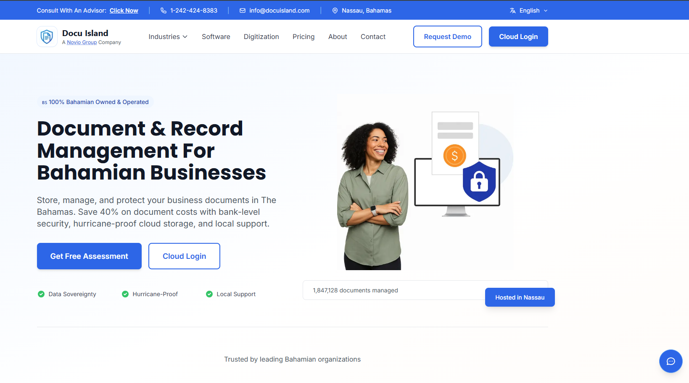
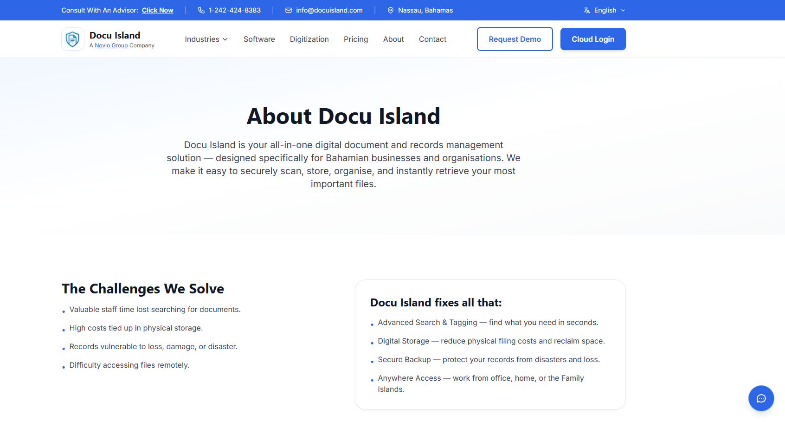
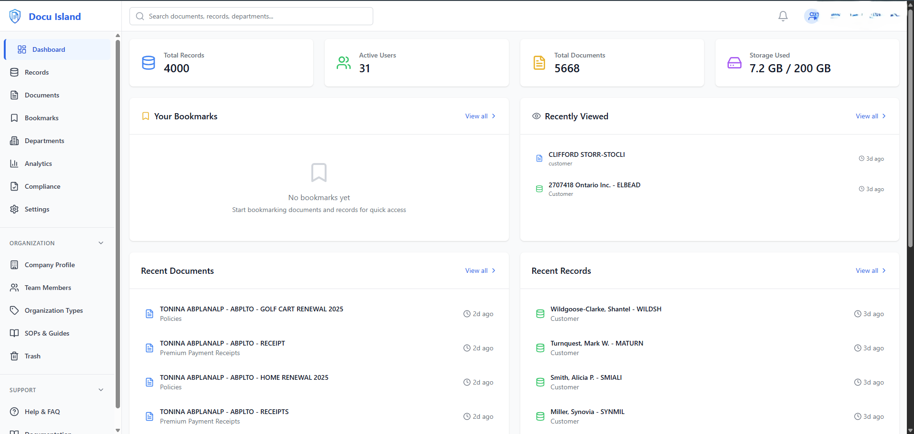
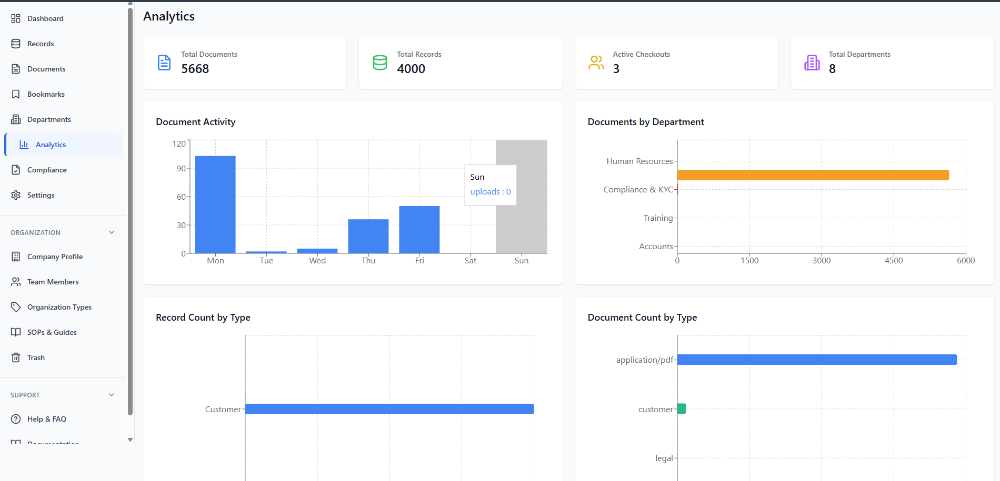
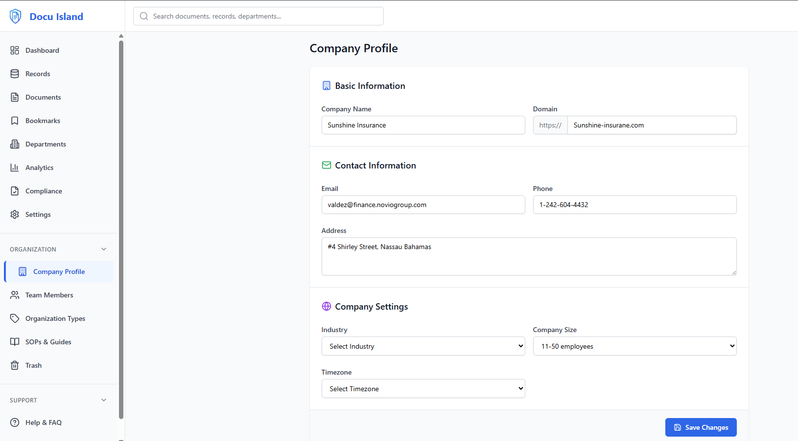
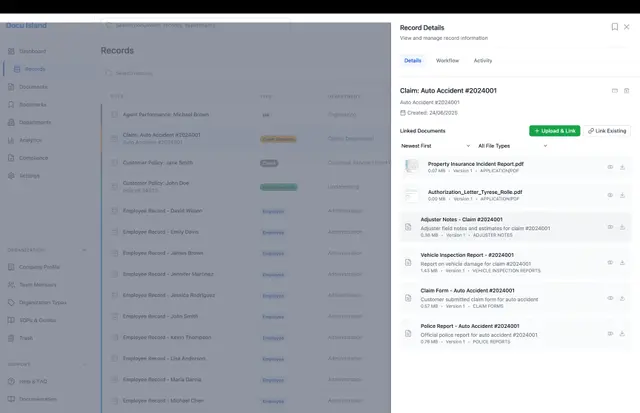
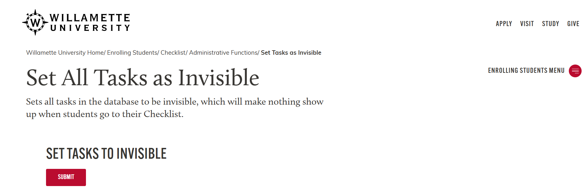
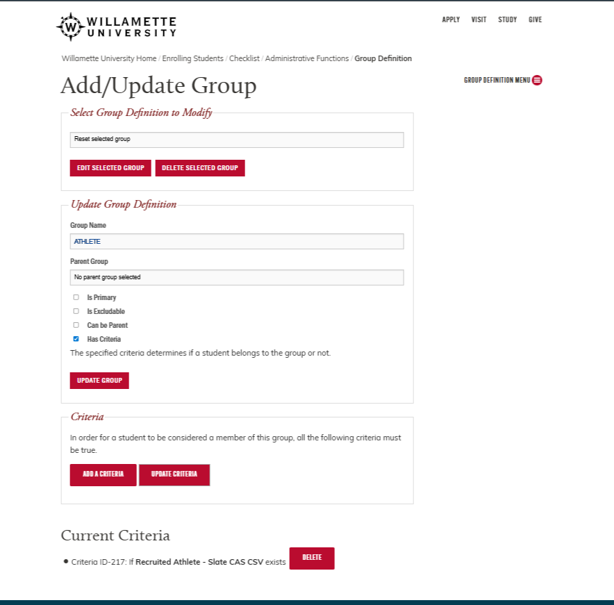
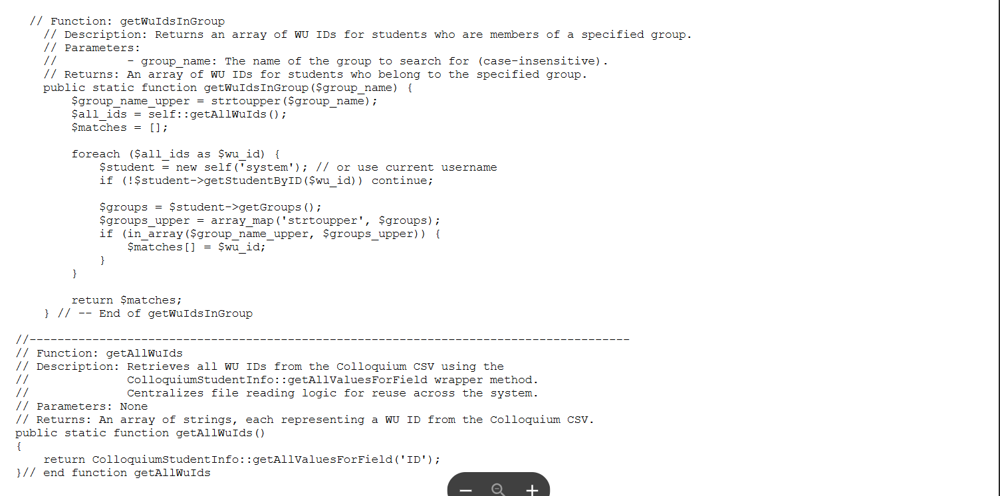
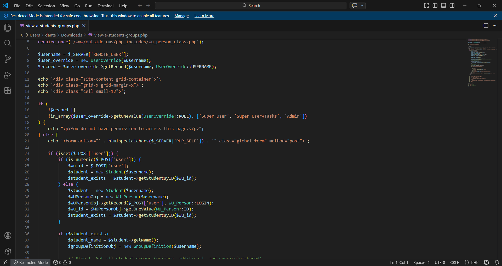

Projects
Docu Island — Document & Records Management Platform
Contributed across frontend and backend to a document and records management platform (cloud + web app), focused on user workflows, UI polish, and bug fixes across production screens.
Highlights
- Improved day-to-day workflows across Records, Documents, and linked-document views
- Shipped UI fixes and UX polish across dashboards, analytics, and admin settings screens
- Supported customer-facing issues with targeted backend + frontend fixes







University Admin Tooling — Student Groups & Checklist Operations
Built and maintained internal admin pages used by staff to manage student group logic and operational tasks safely (visibility toggles, database clearing workflows, and group membership views).
What I built
- Admin actions for operational tasks (safe “clear tables” workflow + task visibility controls)
- Pages to view group membership and student group lists
- Backend utilities for group membership lookup and cleaner, documented code paths







Libra Ink Tattoos — Client Website
Built a client-facing tattoo shop website with booking scheduling and a portfolio-style gallery. Visit site